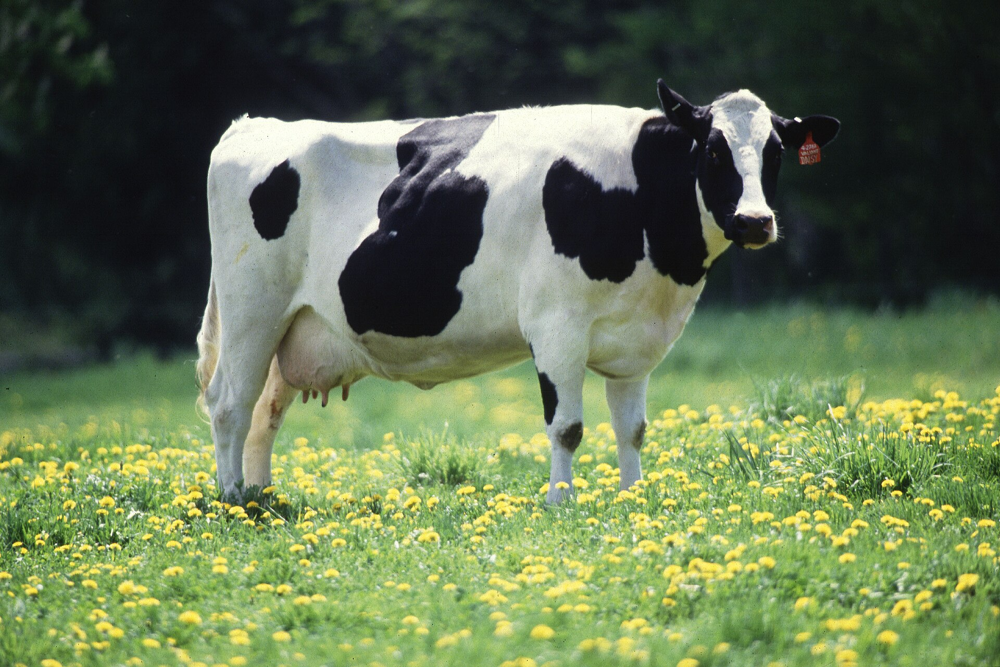

Hei. Nimeni on Petteri ja opiskelen web-kehitystä Laurea-ammattikorkeakoulussa. Lempieläimeni on nauta.
Se on ehkä aika erikoinen valinta lempieläimeksi, mutta niillä on puolensa. Ne ovat isoja, vahvoja ja vaarallisiakin, mutta myös uteliaita, leikkisiä, fiksuja ja nättejä. Ne ovat myös monin tavoin hyödyllisiä ja ovat kulkeneet ihmiskunnan rinnalla pitkään. Kunnioitusta herättäviä elikoita.
